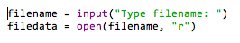
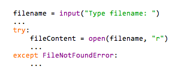
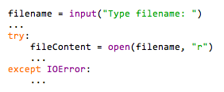
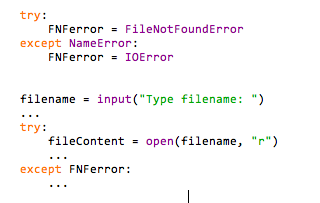

Be aware of the streamlined exception hierarchy in Python 3.3.0
-- written by Sebastian Raschka on March 3, 2013
TweetIt is really nice to see the active development of Python. Thanks to the great community, Python has evolved into the favorite and most popular interpreted programming language.
An important date in the history of Python certainly was December 3rd, 2008 - the release of Python 3.0. However, Python 3 did not please everyone, the community was literally divided; as until today, many people are still using Python 2.7x.
Of course, the changes in syntax might be annoying since Python 3x cannot read Python 2.7x scripts without further adjustments - and vice versa. Another issue was that many modules and packages where not available for Python 3.x upfront and had to be rewritten.
I recently switched to Python 3, and I think the changes (or rather improvements) make sense - they make Python programming even more convenient. Anyways, I don't want to talk about the differences between Python 2.7x and Python 3.x in this article; you can easily find a lot of documentations online, for example, http://docs.python.org/3.0/whatsnew/3.0.html.
A lot has happened after Python 3.0 was released in late 2008, and another major change came with the release of Python 3.3.0 on September 29th, 2012. The exception hierarchy has been reworked and unfortunately this could make Python 3.3.0 code incompatible to previous versions of Python 3 if you didn't account for that.
Before the release of Python 3.3.0, the exception hierarchy seemed to be confusing and arbitrary for many users. Now, in Python 3.3.0 the exceptions OSError, IOError, EnvironmentError, WindowsError, mmap.error, socket.error or select.error
are now summarized under the category 'OSError'.
And 'OSError' was given the following subclasses in Python 3.3.0:
- BlockingIOError
- ChildProcessError
- ConnectionError
- FileExistsError
- FileNotFoundError
- InterruptedError
- IsADirectoryError
- NotADirectoryError
- PermissionError
- ProcessLookupError
- TimeoutError
Usually, programmers do not memorize all the different exceptions that can occur. The best way to implement exception and error handling in your code, you would simply provoke the error, see what you get, and eventually fix your code.
Consider the following example where a user is prompted to enter the name of a file to be opened.
If you are using Python 3.3.0, the code below would raise an 'FileNotFoundError' if an incorrect file name has been entered.
However, in previous versions of Python 3 an 'IOError' would be raised.
As a consequence, the following code would only work with Python 3.3.0, other versions of Python 3 would crash since 'FileNotFoundError' is not defined.
To make sure that your code will also work with older versions of Python 3, you can use the 'IOError' exception, since it became an alias for 'OSError' in Python 3.3.0, and the 'FileNotFoundError' is a subclass of an 'OSError' now.
This solution looks simple, but unfortunately it will cast a pretty wide net, because it will capture all subclasses of 'OSError now.
If this is not what you want, here is a longer but more specific way:
